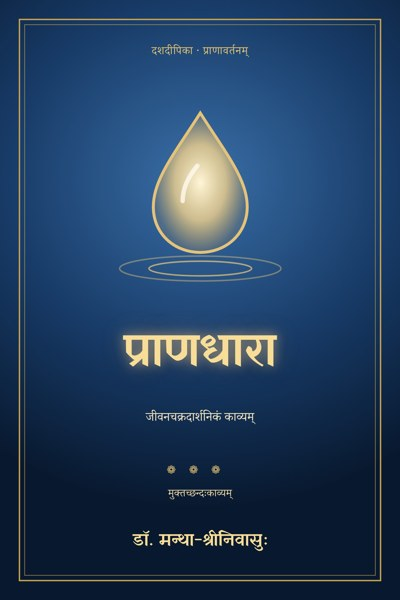
प्राणधारा
जीवनचक्रदार्शनिकं काव्यम्
Google PlayLibraryमातुः स्तन्यस्य प्रथमो बिन्दुः — सैव प्राणधारा। तस्मिन्नेकस्मिन्नेव बिन्दौ समग्रं जीवनं निहितम्; क्षेत्राणां विषं नगरस्य धूमश्च तत्रैव वर्तेते। पावित्र्यं प्रदूषणं चैकेनैव श्वासेन शिशुं प्रविशतः। इदं काव्यं तस्माद् बिन्दोः प्रभवति, एकं समग्रं जीवनं प्रवहति, पुनश्च तस्मिन्नेव बिन्दौ विरमति।
इयं कस्यचित् सामान्यजनस्य कथा। नाम नास्ति; केवलम् 'अहम्'। गर्भः, बाल्यम्, पाठशाला, परीक्षाग्निः, उद्योगद्वारम्, प्रणयः, गृहस्थजीवनस्यार्थसागरः, मानसिकं पतनम्, पुनरुत्थानम्, सन्तानम्, वानप्रस्थम्, अन्ते च मरणं पुनर्जन्म चैकस्यामेव रात्रौ — इति द्वादश सर्गाः, द्वादश मासा इव एकं पूर्णं चक्रम्। नैताः पृथक्पृथक् कविताः; येन बिम्बेनैकः सर्गः समाप्यते, तेनैव बिम्बेन परः सर्ग आरभते।
ग्रन्थे —
• मुक्तच्छन्दःकाव्यम् · द्वादश सर्गाः
• प्राक्कथनम् · क्षीरधारा · पितृच्छाया · अक्षराभ्यासः · परीक्षाग्निः · उद्योगद्वारम् · प्रणयपर्व · अर्थसागरः · कालकूटम् · नीलकण्ठः · सन्तानदीपः · वानप्रस्थम् · पुनःप्राणधारा
मुक्तच्छन्दःकाव्यानि · दशदीपिका · संस्कृतम् · Free-verse kāvyas · Daśadīpikā · Sanskrit
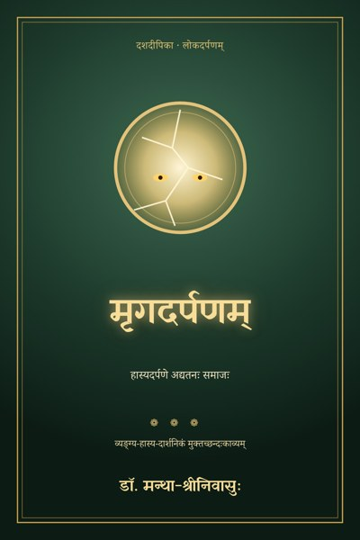
मृगदर्पणम्Sanskrit
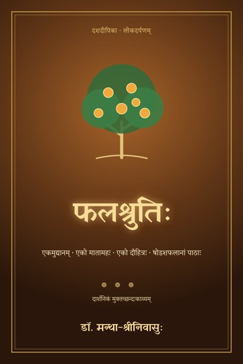
फलश्रुतिःSanskrit
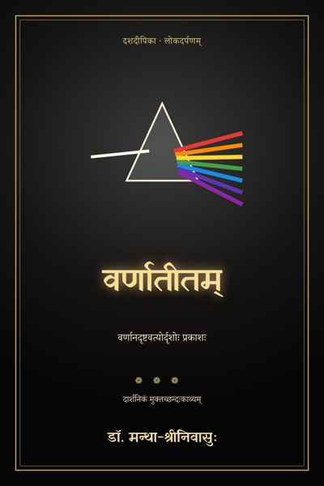
वर्णातीतम्Sanskrit
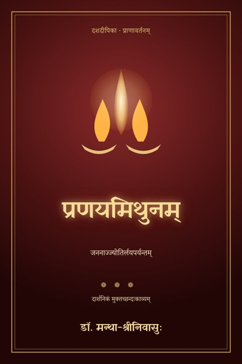
प्रणयमिथुनम्Sanskrit
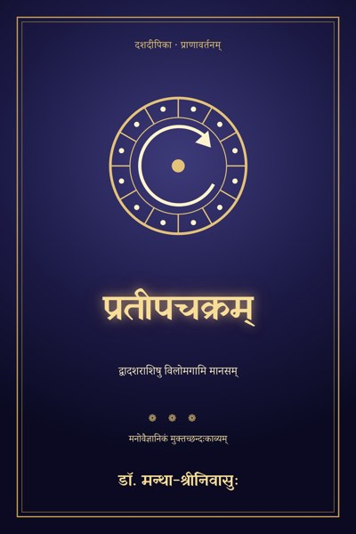
प्रतीपचक्रम्Sanskrit
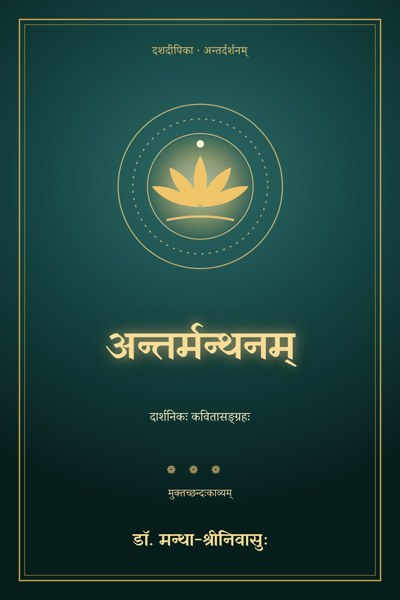
अन्तर्मन्थनम्Sanskrit
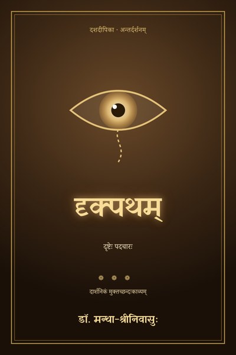
दृक्पथम्Sanskrit
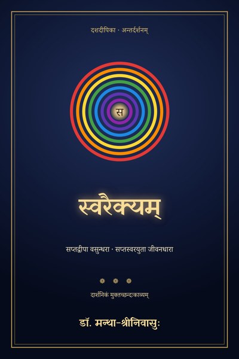
स्वरैक्यम्Sanskrit
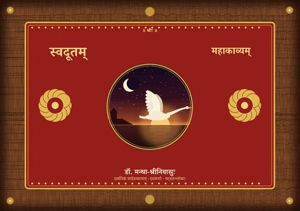
स्वदूतम्Sanskrit
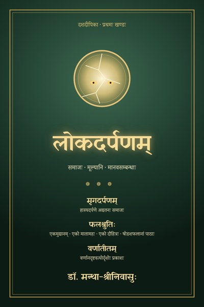
लोकदर्पणम्Sanskrit
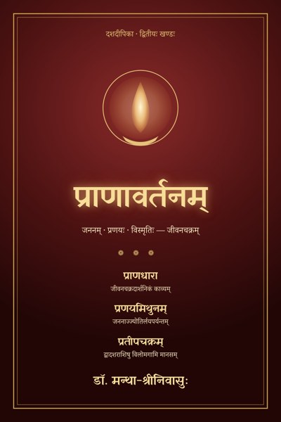
प्राणावर्तनम्Sanskrit
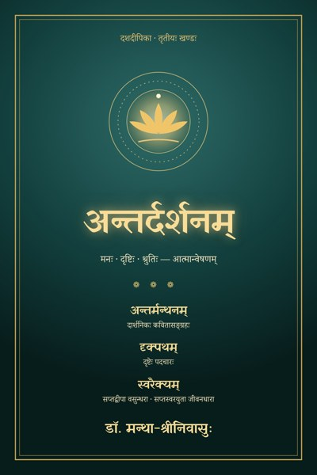
अन्तर्दर्शनम्Sanskrit
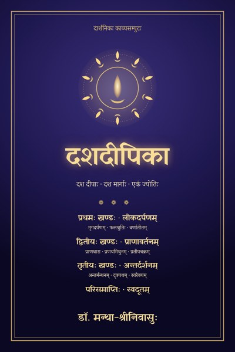
दशदीपिकाSanskrit